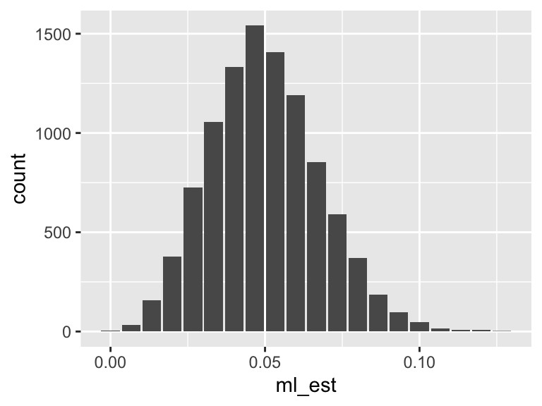

1.5 Sampling Distribution
What’s the most important concept in statistical inference? I don’t know, but it could be the sampling distribution. For effect, let me back off the hedge.
The most important concept in statistical inference is the sampling distribution.
To define a sampling distribution, you need to imagine repeating a study over and over. If each study has a random component (perhaps random sampling or random assignment to treatment and control), then the estimate will differ from study to study. The distribution of the estimates across the studies is called the sampling distribution.
1.5.1 Example: The Toothpaste Cap Problem
For a given sample of 150 tosses, we recognize the the ML estimate \(\hat{\pi}\) does not (usually) exactly equal the parameter \(\pi\). Instead, the particular \(\hat{\pi}\) that the study produces is draw from a distribution.
Let’s illustrate that with a simulation. For these simulations, I suppose that we toss the toothpaste cap 150 times and the chance of a head is 5%.
n_sims <- 10
ml_est <- numeric(n_sims) # a container for the estimates
for (i in 1:n_sims) {
y <- rbinom(150, size = 1, prob = 0.05)
ml_est[i] <- mean(y)
}
print(ml_est, digits = 2)## [1] 0.027 0.060 0.060 0.053 0.073 0.093 0.040 0.053 0.027 0.033As you can see, the ML estimates vary to from sample to sample–different data sets produce different ML estimates. We need a way to create a confidence interval that consistently captures \(\theta\).
If we repeat the simulations a large number of times, we can see an accuracy picture of the sampling distribution via histogram.
n_sims <- 10000
ml_est <- numeric(n_sims) # a container for the estimates
for (i in 1:n_sims) {
y <- rbinom(150, size = 1, prob = 0.05)
ml_est[i] <- mean(y)
}
gg_data <- data.frame(ml_est = ml_est)
ggplot(gg_data, aes(x = ml_est)) +
geom_bar()
Many of our methods of evaluating an estimator are statements about the sampling distribution of that estimator. In general, we’d like the sampling distribution to be centered over the true parameter of interest and tightly dispersed.